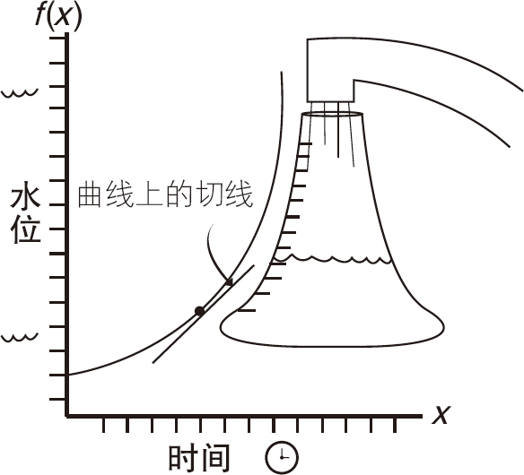
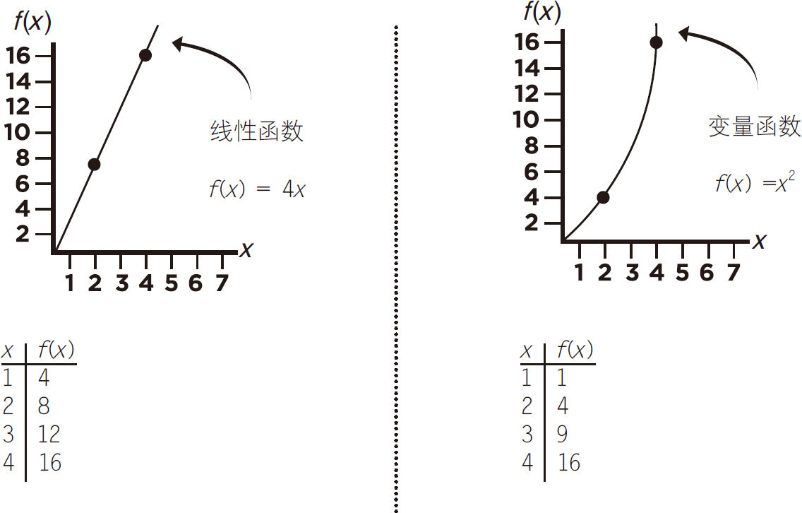
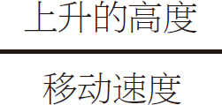
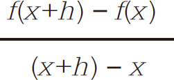
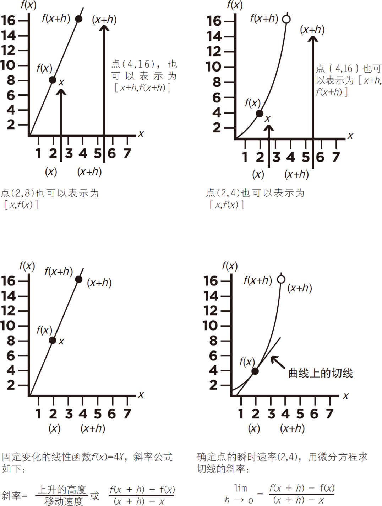
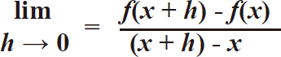
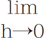
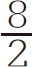
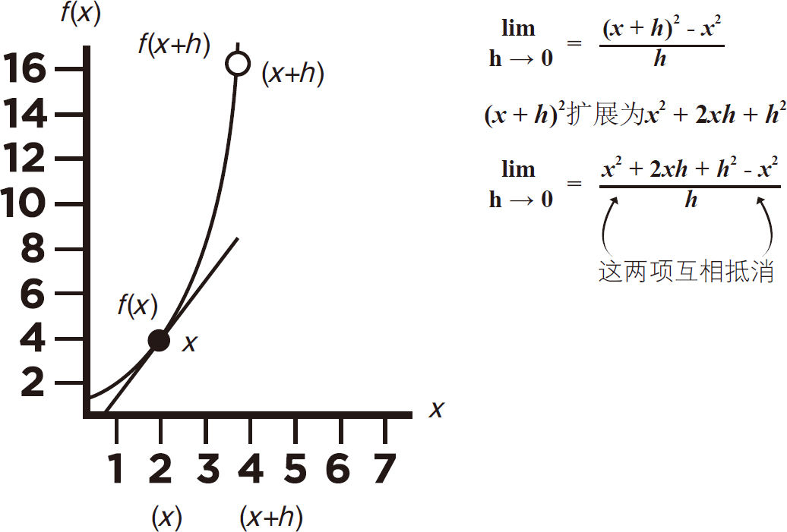
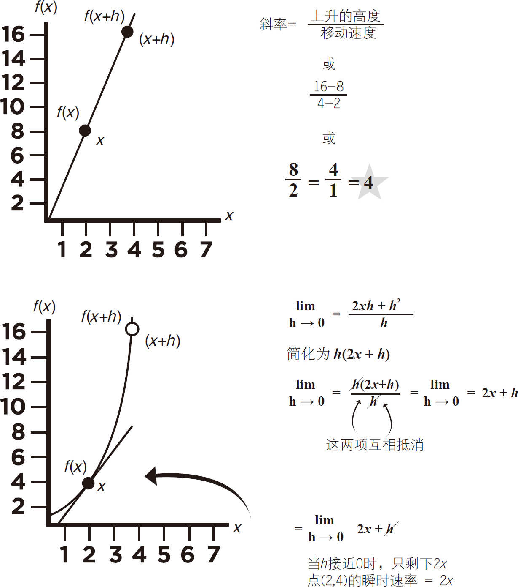

图5-13
本节将详细说明函数的变化率是如何用微积分确定的。为了便于理解，在不断变化的函数旁边将显示一个线性函数与之进行比较。
如图5-10所示，钟形瓶子旁边变化着的函数曲线，它代表了函数f （x ）＝x 2 。在后面的图解中，水平线叫x 轴，垂直线叫作f（x ）轴（不是y 轴）。如图5-11所示，图上的两点间的连线构成了线性函数，用公式表示，为f （x ）＝x 2 。

图5-10
瞬时变化率是由一个不断变化的函数决定的。
与一个稳定的线性速率函数相比，如何计算点的瞬时速率。
在这个例子中，y 轴表示为f （x ）或x 的函数的值。

图5-11
在图上，线性函数的两个点表示为（2,8）和（4,16），这两个点也可以由变量［x ，f （x ）］和［x ＋h ，f （x ＋h ）］来表示。右边变化函数上的点在图上表示为（2,4）和（4,16），这两个点也可以由变量［x ，f （x ）］和［x ＋h ，f （x ＋h ）］表示，见图5-12。
线性函数的速率公式：
斜率＝

或：


图5-12
求变化函数在点（2,4）的瞬时变化率（也就是曲线的切线斜率），微分方程的用法如下：

线性函数的上升/水平是（16-8）/（4-2）。对比右边的变量函数，我们将函数的值f（x ）＝x 2 代入变量的微分方程lim h →0＝f（x ＋h ）-f（x ）/（x ＋h ）-x 。
这相当于

＝（x ＋h ）2 -x 2 /（x ＋h ）-x ，如图5-13所示。你可以取消x 和-x ，只留下h 作为分母。
图5-13
线性方程的分数项减小到

。将方程式（x ＋h ）2 扩展为x 2 ＋2xh ＋＋h 2 。现在正x 2 和负x 2 互相抵消，只留下2xh ＋h 2 ，如图5-14所示。
图5-14
图5-15所示，线性方程的值 简化为 等于4。

图5-15
极限h →0＝2xh ＋h 2 可以减少到只有2x ，因为h 接近零值。此时，只有2x 。因为图上x ＝2，得出点（2,4）的瞬时速率＝4。
你可以进一步找到这一变化函数图上其他点的瞬时速率。例如，计算点（3,8）的瞬时速率。
微积分提供了一种方法来预测模型模拟的结果。
■你可能想知道为什么计算曲线上的一个点的变化率需要这么多步骤。用线性（直线）函数，你可以使用直线上的任意两个坐标点来解出它的斜率（或速率），因为它是不变的。

■然而，具有变化率的函数，如f （x ）＝x 2 ，在坐标点之间没有直线。计算一个点的速率等于零（因为没有运动或距离）。
■极限可以让你通过在曲线上远离第一点无穷小距离的第二个点找到瞬时速率。
■数学函数可以用来研究位置、生长或衰变的变化模型。包括行星的位置、复利收益、细菌生长、药物吸收、速率、人口增长和放射性衰变。
■用科学计算器计算变化率、积分、微分问题要容易得多。下一节将告诉你如何应用。